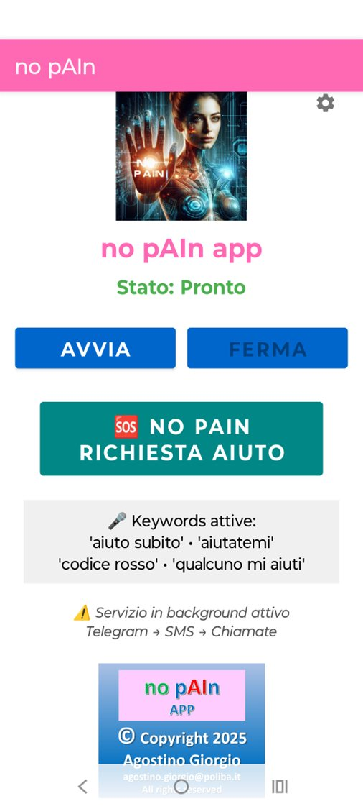
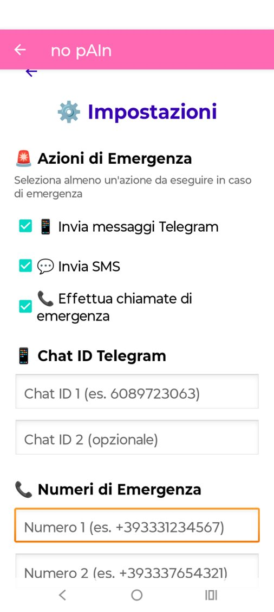
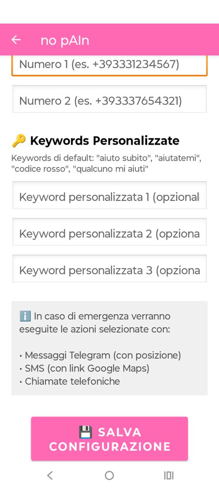
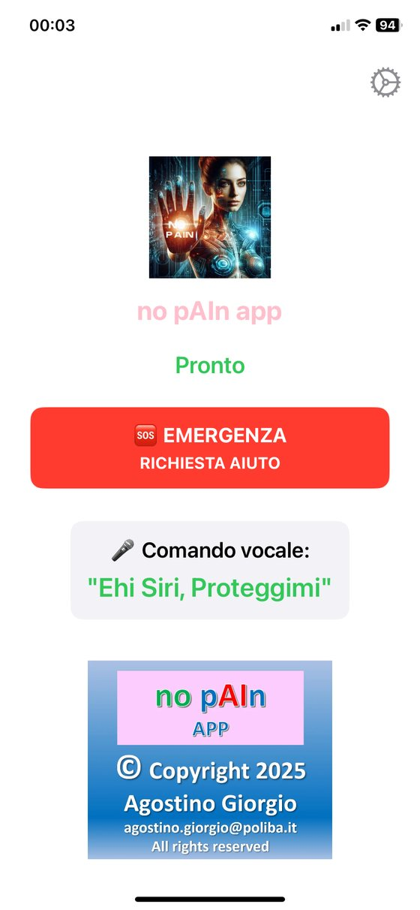
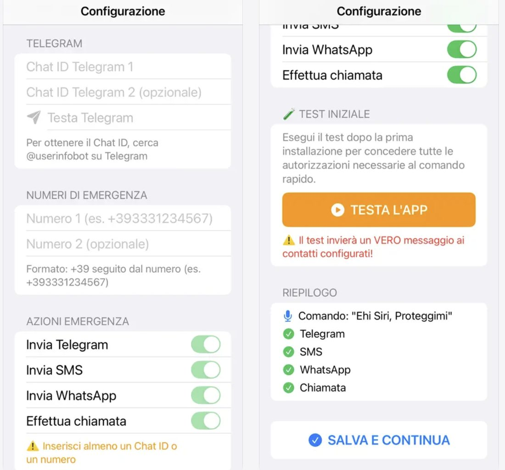
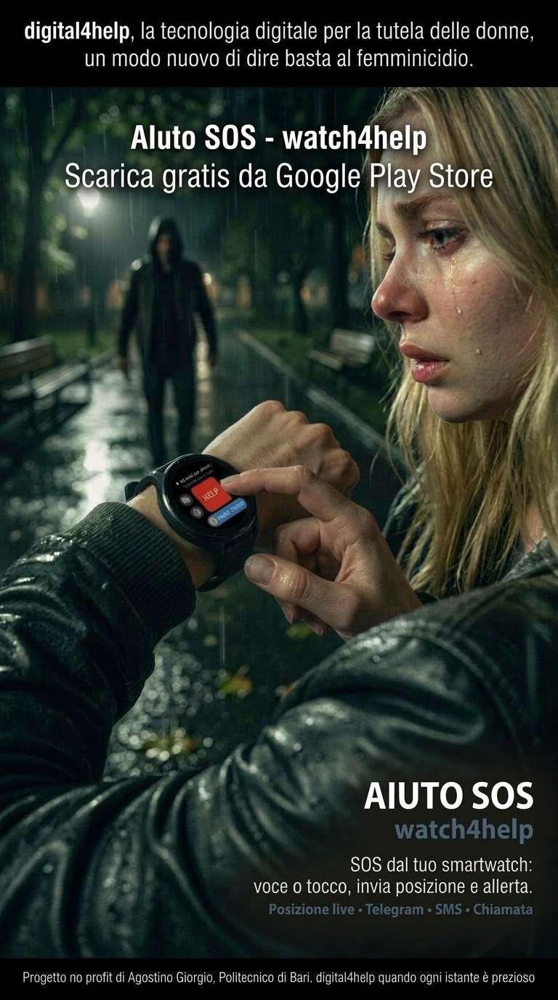
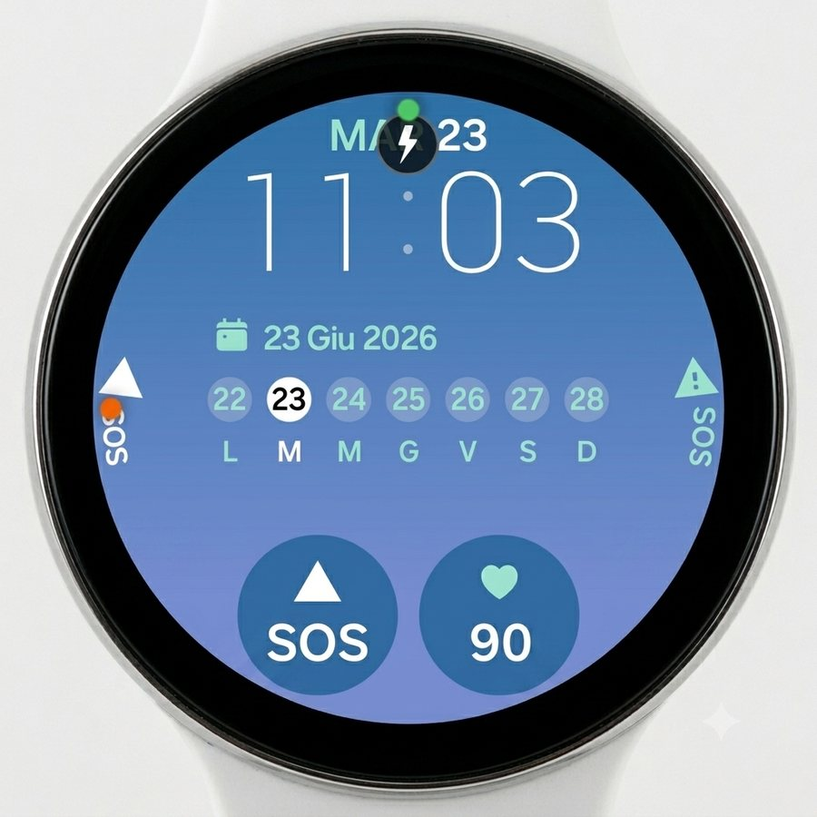
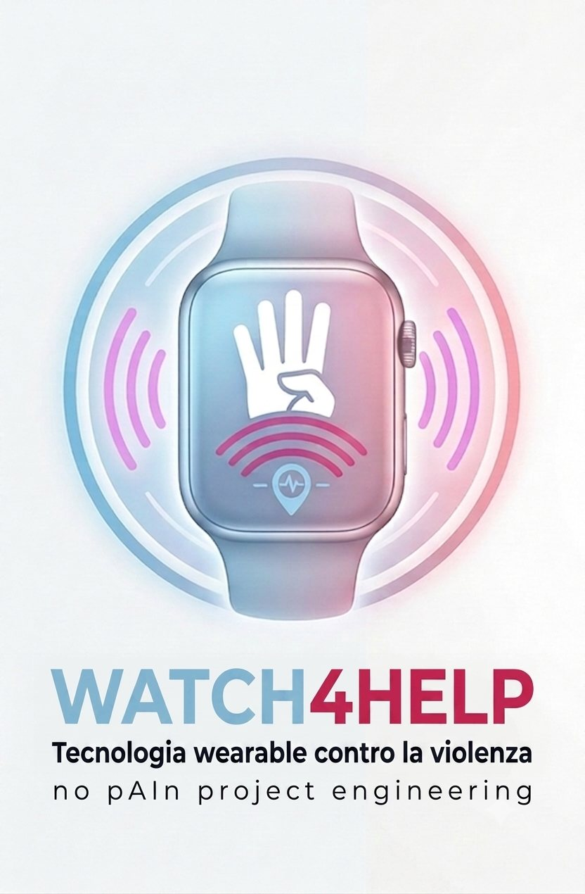

{kind=link}
{kind=link}
{kind=link}
{kind=link}
{kind=link}
{kind=link}
{kind=link}
{kind=link}
{kind=link}
{kind=link}
Android12 lingue
AI help App
Un'altra soluzione multilingue per Android: 12 lingue, di cui 3 con riconoscimento vocale anche offline. Si attiva con comandi vocali o con la richiesta manuale di aiuto.
no pAIn™ porta su smartphone un “signal for help” elettronico, attivabile con la voce o con un tocco. watch4help™ è la stessa tecnologia per smartwatch. Lingue, connessioni e funzioni cambiano da un'app all'altra.
Si scaricano tutte gratis e in ognuna chiedere aiuto con la tua posizione resta gratuito. Cosa è gratis in ogni app →

La versione Android in 12 lingue, con parole chiave personalizzabili, riconoscimento vocale offline e app compagna per smartwatch Wear OS. Offre tutti i punti di innesco della tecnologia no pAIn™, compreso il pulsante button4help™.
3 giorni di prova con tutte le funzioni. Poi le funzioni di emergenza restano gratuite: scade solo l'avvio dal tasto Start dell'app.
AI help You avvisa i contatti configurati. Non contatta i servizi pubblici di emergenza e non li sostituisce. Dopo i 3 giorni di prova funziona gratis in modalità emergenza rapida: vedi Free e Premium.
Dodici lingue, il pulsante button4help™ e l'allarme che parte con una semplice pressione: le locandine riassumono cosa fa l'app e come si scarica.
Tocca un'immagine per ingrandirla.
La versione Android in italiano, con attivazione vocale o manuale. Ascolta le tue parole chiave anche con app chiusa e schermo spento, e ha un'app compagna per smartwatch Wear OS.
3 giorni di prova con tutte le funzioni. Poi le funzioni di emergenza restano gratuite: scade solo l'avvio dal tasto Avvia dell'app.
Dopo aver accettato i termini d’uso, nelle impostazioni scegli le azioni di emergenza e inserisci numeri di telefono, chat ID Telegram e parole chiave segrete. La pagina principale mostra lo stato dell’app e le parole chiave attive.
Tocca un'immagine per ingrandirla.



Il telefono è a terra, lontano dalle mani, eppure i messaggi di aiuto partono. Gli amici ricevono l'allarme con la posizione: uno chiama le forze dell'ordine, che arrivano in tempo.
Scene di finzione, a scopo dimostrativo. Il video ha l'audio.
La versione per iPhone, con le stesse funzioni sostanziali di AI help You: 12 lingue, app compagna per Apple Watch e compatibilità con button4help™. In più, invia l'allarme anche su WhatsApp.

Sempre gratis: l'allarme con la tua posizione. Il messaggio di allerta su Telegram parte con la posizione del momento e con la posizione live per 30 minuti, anche da Apple Watch.
Con un unico acquisto in app, senza abbonamento, aggiungi il comando vocale “Ehi Siri, Proteggimi”, SMS, WhatsApp, telefonata e la posizione live fino a 24 ore.
SMS, WhatsApp e telefonata passano dal Comando Rapido Apple “Proteggimi”, che si installa dall'app. Da Apple Watch partono Telegram e posizione anche con iPhone bloccato; per le altre azioni serve l'app iPhone in primo piano.
Nella pagina principale c’è il grande tasto EMERGENZA. Nella configurazione inserisci i chat ID Telegram e i numeri di emergenza, scegli le azioni da inviare e fai un test iniziale per verificare che tutto funzioni.
Tocca un'immagine per ingrandirla.


Un'app solo per smartwatch Wear OS che non ha bisogno dello smartphone. È la tecnologia no pAIn™ in versione indossabile, chiamata watch4help™: l'allarme parte direttamente dal polso.
Tutte le funzioni sono gratuite. Nessuna prova a tempo, nessun abbonamento e nessun acquisto in app.
Da non confondere con le app compagne di Proteggimi e AI help You, che invece lavorano insieme al telefono abbinato.
Un tocco sul grande tasto rosso o un comando vocale: l'orologio invia la posizione e l'allerta ai tuoi contatti con Telegram, SMS e telefonata, anche con lo smartphone lontano.
Tocca un'immagine per ingrandirla.




Un'altra soluzione multilingue per Android: 12 lingue, di cui 3 con riconoscimento vocale anche offline. Si attiva con comandi vocali o con la richiesta manuale di aiuto.
Un'app dedicata ad Apple Watch, di prossima pubblicazione. È diversa dall'app compagna già inclusa in no pAIn™ per iPhone.
Per usare oggi Apple Watch, installa no pAIn™ per iPhone.
Il pulsante da tenere in tasca che fa scattare l'allarme di AI help You e di no pAIn™ per iPhone, una volta abbinato all'app: da solo non ha funzioni di emergenza. Cos'è, cosa non è e dove acquistarlo.
Scopri button4help™ →Il manuale di Proteggimi per Android è un PDF in italiano: si apre nel browser e si può salvare. La sezione su Telegram spiega come collegare i contatti al bot in pochi passaggi. La durata della posizione live cambia da un'app all'altra: controlla le opzioni dell'app installata.
{kind=link}
{kind=link}
{kind=link}
{kind=link}